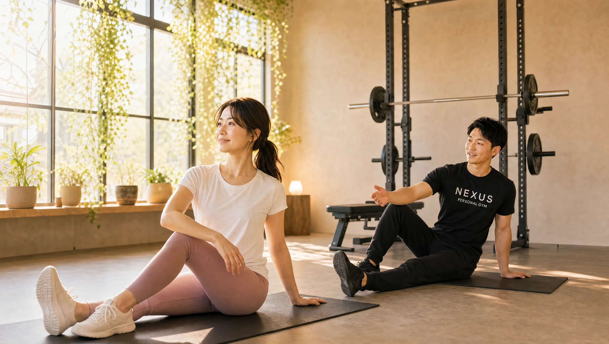

体重よりも「見た目」が変わるタイミングはいつ？


結論：見た目は体重より先に変わる
体重が停滞していても、見た目は先に変わります。自分で気づくのが約4週間、周囲に「痩せた？」と気づかれるのが8〜12週間が、NEXUSの現場で見てきた目安です。体重計の数字が動かない時期にこそ、体は静かに引き締まっています。
私はNEXUSパーソナルジム71店舗の現場で、数え切れないほどの「体重は減らないのに、明らかに見た目が変わった」という瞬間に立ち会ってきました。ダイエットで心が折れる最大の原因は、この事実を知らないまま体重計だけを見てしまうことです。今日はその仕組みと、変化を確実に捉える方法をお伝えします。
なぜ体重が止まってもサイズは変わるのか
理由は、脂肪と筋肉の「密度の差」にあります。筋肉は脂肪よりも約2割ほど密度が高い、つまり同じ重さでも体積が小さい組織です。
筋トレを続けると、体の中では脂肪が減り、筋肉が少しずつ増えるという入れ替わりが起きます。仮に脂肪が1kg減って筋肉が1kg増えれば、体重計の数字は「変化なし」です。しかし体積では脂肪のほうが大きいため、体重が同じでも体は確実に細く、引き締まっていく。これが「体重は止まっているのに服がゆるくなる」現象の正体です。
体重が動かない停滞期は、失敗ではありません。脂肪と筋肉が入れ替わっている、いわば「見た目が最も変わる時期」であることが多いのです。
特に30〜40代の女性は、加齢とともに落ちがちな筋肉を取り戻す過程で、この入れ替わりが顕著に起きます。だからこそ、体重という一つの数字だけで自分を評価するのは、あまりにもったいない。停滞期そのものの乗り越え方は、30代女性の停滞期、抜け出した方法で詳しく解説しています。
変化が表れる順番と時期の目安
見た目の変化には、体の部位ごとに順番があります。現場で観察してきた、おおよその流れを紹介します。
〜4週間：自分だけが気づく変化
まず表れるのは、フェイスラインと姿勢です。むくみが取れて顔まわりがすっきりし、トレーニングで背中が使えるようになると姿勢が伸びます。この時期は他人にはまだ分かりにくく、「気のせいかな」と思う程度の、自分だけが感じる変化です。
4〜8週間：服のサイズに表れる変化
ウエストや二の腕など、サイズに変化が出てきます。今まできつかったパンツのウエストに余裕が出る、シャツの二の腕がゆるくなる。体重より先に「服が教えてくれる」のがこの時期です。
実際、体重は2ヶ月で1kgしか減っていないのに、ウエストが5cm細くなった会員の方もいました。ご本人は「全然痩せていない」と落ち込んでいたのに、久しぶりに会った友人には真っ先に気づかれた。数字だけを見ていたら、この方はきっと途中でやめていたと思います。体重という一つの物差しがいかに不完全か、私はこうした場面のたびに実感します。
8〜12週間：周囲が気づく変化
ここでようやく、周りから「痩せた？」「なんか変わったよね」と言われ始めます。上半身が先に変わり、下半身は少し遅れて追いついてくる。つまり、下半身が気になる方ほど、この時期まで続けられるかどうかが分かれ道になります。焦って早い時期に諦めてしまうと、一番の変化が起きる直前でやめることになりかねません。
写真記録のすすめ（撮り方のコツ）
鏡は毎日見るため、少しずつの変化に気づけません。そこで私が全員におすすめしているのが2週間に1回の写真記録です。撮り方には、変化を正確に捉えるためのコツがあります。
- 同じ場所・同じ時間：朝一番、同じ部屋の同じ照明で。夜は食事やむくみで印象が変わります。
- 同じ服装・同じ角度：体のラインが分かる服で、正面・横・後ろの3方向。
- 2週間ごとに並べる：直近の1枚だけでなく、開始時から並べて比較する。
2週間ごとの写真を並べた瞬間に、「あ、確かに変わってる」と表情が変わる会員の方を、私は何度も見てきました。体重計に一喜一憂するより、この一覧のほうがずっと強いモチベーションになります。数字が動かない停滞期を乗り切る、最も確実な武器です。日々の習慣として続ける工夫は、30〜40代女性のための「無理なく続く」ダイエットルーティンもあわせてどうぞ。
ちなみに、結婚式という明確な期日がある方は、この「見た目の変化」が写真という形で一生残ります。挙式から逆算して見た目を仕上げたい方は、ブライダルボディメイク特集も参考になるはずです。
周囲に気づかれる「本当の意味」
「痩せた？」と言われる時期の目安を8〜12週間とお伝えしましたが、この一言には、数字以上の力があります。私は現場で、周囲に気づかれたことをきっかけに、ダイエットが一気に加速する女性を何人も見てきました。
理由は明快で、他人からの承認は、自分では気づけなかった変化を「事実」として確定させてくれるからです。鏡を見ても半信半疑だった人が、同僚の一言で「本当に変わってきたんだ」と確信を持つ。その瞬間から、行動の一つひとつに自信が宿ります。
見た目の変化は、モチベーションの「燃料」です。体重という内向きの数字より、他人が気づく外向きの変化のほうが、人を前に進ませます。
逆に言えば、周囲に気づかれる前にやめてしまうのが、一番もったいない。多くの人が「変わっていないから」と感じる8週目こそ、実は変化が表面化する直前です。この時期を越えられるかどうかが、ダイエットが続くか諦めるかの分かれ道になります。だからこそ、体重計ではなく写真とサイズで「確かに進んでいる」と自分に証明し続けることが、何より大切なのです。
まとめ：体重計との付き合い方を変える
体重は、体の状態を表す指標の「ひとつ」に過ぎません。特に筋トレを取り入れたダイエットでは、体重より見た目のほうが正直に変化を教えてくれます。今日から、次のように付き合い方を変えてみてください。
- 体重は週1回、同じ条件で測る（毎日測らない）
- 2週間に1回、同じ条件で写真を撮る
- 服のフィット感を、体重と同じくらい大事な指標にする
数字が動かない日にこそ、あなたの体は変わっています。それを見逃さない仕組みを持てば、ダイエットはもっと続けやすくなります。
見た目の変化を、確実に積み上げる。
NEXUSパーソナルジムは、完全個室・マンション一室型。
30〜40代女性が85%を占める、隠れ家のような空間です。
無料カウンセリングで、あなたの体に合った変化の道筋をお見せします。